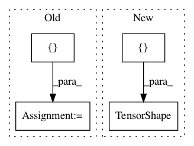

066ef66950b6729a1cde321364b368d2fc3a9e1b,texar/modules/decoders/transformer_decoders.py,TransformerDecoder,greedy_decode,#TransformerDecoder#Any#Any#Any#Any#Any#Any#,311
Before Change
),
parallel_iterations=1)
outputs = tf.slice(outputs, [0, 1], [-1, -1]) //[ignore <s>
outputs = tf.expand_dims(outputs, 1)
lengths = tf.expand_dims(lengths, 1)
After Change
tf.TensorShape([None, None]),
tf.TensorShape([None, None]),
tf.contrib.framework.nest.map_structure(beam_search.get_state_shape_invariants, cache),
tf.TensorShape([None]),
))
outputs = tf.expand_dims(decoded_ids, 1)
In pattern: SUPERPATTERN
Frequency: 3
Non-data size: 4
Instances
Project Name: asyml/texar
Commit Name: 066ef66950b6729a1cde321364b368d2fc3a9e1b
Time: 2018-04-28
Author: shore@pku.edu.cn
File Name: texar/modules/decoders/transformer_decoders.py
Class Name: TransformerDecoder
Method Name: greedy_decode
Project Name: asyml/texar
Commit Name: fe50234d231d1a62703debc5fab4995ecf06001d
Time: 2017-10-05
Author: junxianh2@gmail.com
File Name: txtgen/modules/connectors/connectors_test.py
Class Name: TestConnectors
Method Name: test_concat_connector
Project Name: OpenNMT/OpenNMT-tf
Commit Name: 3ba16a18cf3872e1e49e048adeea838f70ef9401
Time: 2017-08-15
Author: guillaume.klein@systrangroup.com
File Name: opennmt/decoders/self_attention_decoder.py
Class Name: SelfAttentionDecoder
Method Name: dynamic_decode